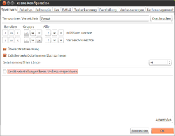
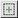
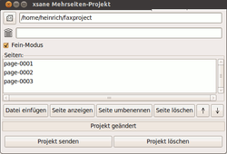

XSane
Dieser Artikel wurde für die folgenden Ubuntu-Versionen getestet:
Ubuntu 16.04 Xenial Xerus
Ubuntu 14.04 Trusty Tahr
Zum Verständnis dieses Artikels sind folgende Seiten hilfreich:
XSane  ist ein sehr umfangreiches und leistungsfähiges Scanprogramm mit einer GTK+-Oberfläche, das als sogenanntes "Frontend" für SANE fungiert. Es bietet sich daher an, XSane unter GNOME, Xfce sowie Unity zu nutzen. XSane bietet umfangreiche Vorschaufunktionen, alle Scanprogramm-typischen Einstellungen wie Auflösung, Anzahl der Farben, ein Histogramm, Optionen zu Verbesserung des Scans und Drehen der Vorschau und des fertigen Scans. Das Programm enthält auch eine Fotokopie-Funktion, es können mehrseitige Scans z.B. als PDF-Datei abgespeichert oder Scans gleich als E-Mails versendet werden. XSane kann auch als Schnittstelle für ein Fax-Gerät dienen oder mit entsprechenden Zusatzprogrammen auch Texterkennung, DjVu-Abspeicherung etc. durchführen. Außerdem kann XSane über ein Plug-In aus GIMP direkt gestartet werden. Um mit XSane auf Scanner im Netzwerk unter einem SANE-Server zugreifen zu können, existiert auch eine Windows-Portierung.
ist ein sehr umfangreiches und leistungsfähiges Scanprogramm mit einer GTK+-Oberfläche, das als sogenanntes "Frontend" für SANE fungiert. Es bietet sich daher an, XSane unter GNOME, Xfce sowie Unity zu nutzen. XSane bietet umfangreiche Vorschaufunktionen, alle Scanprogramm-typischen Einstellungen wie Auflösung, Anzahl der Farben, ein Histogramm, Optionen zu Verbesserung des Scans und Drehen der Vorschau und des fertigen Scans. Das Programm enthält auch eine Fotokopie-Funktion, es können mehrseitige Scans z.B. als PDF-Datei abgespeichert oder Scans gleich als E-Mails versendet werden. XSane kann auch als Schnittstelle für ein Fax-Gerät dienen oder mit entsprechenden Zusatzprogrammen auch Texterkennung, DjVu-Abspeicherung etc. durchführen. Außerdem kann XSane über ein Plug-In aus GIMP direkt gestartet werden. Um mit XSane auf Scanner im Netzwerk unter einem SANE-Server zugreifen zu können, existiert auch eine Windows-Portierung.
Installation¶
Es müssen folgende Pakete installiert[1] werden:
xsane
 mit apturl
mit apturl
Paketliste zum Kopieren:
sudo apt-get install xsane
sudo aptitude install xsane
Für die Texterkennung werden ggf. folgendes Paket benötigt:
gocr (universe, um Texterkennung durchführen zu können (Standard in XSane))
cuneiform (optional)
tesseract-ocr (sowie mindestens ein Sprachpaket, optional)
mit apturl
Paketliste zum Kopieren:
sudo apt-get install gocr cuneiform tesseract-ocr
sudo aptitude install gocr cuneiform tesseract-ocr
Anschließend findet man es im GNOME-Menü unter
" Anwendungen -> Grafik -> XSane Scanprogramm"[2]
Programm-Optionen¶
In XSane können zur Benutzung etliche Fenster gleichzeitig geöffnet sein, das ist für Einsteiger zunächst etwas unübersichtlich. Welche gezeigt werden, lässt sich z.T. im Hauptfenster unter "Fenster" festlegen; es werden nicht immer alle benötigt, einige liefern recht spezielle zusätzliche Einstellungsmöglichkeiten oder Informationen, die z.T. von der verwendeten Hardware abhängig sind.
Unter "Datei -> Informationen" ( Strg + I ) lassen sich Details zum verwendeten Scanner aufrufen. Die eigentlichen Konfigurations-Einstellungen werden unter "Einstellungen" vorgenommen, dort lässt sich auch das Farbmanagement aktivieren, oder die Option zur Erstellung eigener Medien-Definitionen. Außerdem können Geräte-Einstellungen gespeichert, oder geladen werden (z.B. für verschiedene Scanner).
Unter "Ansicht" lässt sich theoretisch die Anzeige von Tipps mit dem Programmstart aktivieren; außerdem lassen sich die Methode zur Aktualisierung der Anzeige festlegen, sowie die zu verwendende Längeneinheit bestimmen (mögliche Einheit sind mm, cm, oder Zoll). "Hilfe -> XSane Anleitung" ( F1 ) ruft die umfangreiche, allerdings englischsprachige Dokumentation auf (dazu muss das Paket xsane-doc installiert sein); außerdem können dort weitere Hilfen und Informationen aufgerufen werden.
Konfiguration¶
 Die recht umfangreichen Konfigurationseinstellungen werden im Hauptfenster über "Einstellungen -> Konfiguration" ( Alt + S ) erreicht. Hier werden die Angaben zu den verschiedenen Programm-Optionen und Scan-Modi festgelegt.
Unter "Speichern" lassen sich Angaben zum verwendeten Temporär-Verzeichnis und Zugriffsrechten machen, außerdem lässt sich eine Überschreibwarnung aktivieren und angeben, dass existierende Dateinamen übersprungen werden sollen; ebenso die Anzahl der Ziffern für den Dateinamenzähler (z.B. Bild001, Bild-2, Bild0003).
Unter "Dateityp" lassen sich u.a. Angaben zur Dateikompression für die Formate PDF, JPEG, PNG, und TIFF machen.
Bei "Fotokopie" muss der zu verwendende Drucker (Name, Befehl, Option für die Anzahl der Kopien) definiert werden. Meist funktionieren die dort angegebenen Werte, als Drucker ist "lp0" Standard. Die Scan-Auflösung lässt sich hier für Strichzeichnung ("lineart"), Graustufen ("grayscale") und Farbscans ("color") jeweils einzeln in dpi festlegen. Außerdem kann die Papiergröße festgelegt und Randeinstellungen vorgenommen werden. Weitere Einstellungsmöglichkeiten sind für die einzelnen Gamma-Kanäle sowie zur Angabe eines ICM-Profils vorgesehen. Mit der Schaltfläche "Drucker hinzufügen" lassen sich weitere Drucker konfigurieren.
Unter "Fax" lassen sich Einstellungen für Faxprogramme wie efax, mgetty/sendfax oder HylaFAX vornehmen. Bei "E-Mail" werden die Angaben zum verwendeten E-Mail-Account und Provider festgelegt, die zum Versenden von Mails direkt aus XSane benutzt werden sollen. Im Reiter "Texterkennung" können Angaben zum zu verwendenden OCR-Programm, (Standard ist GOCR) sowie Optionen dazu gemacht werden.
Unter "Darstellung" lassen sich Werte für die Programmdarstellung sowie die Gamma-Werte in der Vorschau definieren; außerdem kann der Browser für die Hilfefunktion festgelegt werden. Bei "Verbesserungen" können u.a. dezidierte Angaben zum verwendeten Schwellenwert in verschiedenen Bereichen und die Größe des Bereichs für Vorschau-Pipette (siehe Vorschaufenster) gemacht werden. Unter "Color management" lassen sich Vorgaben zum Farbmanagement festlegen.
Benutzung¶
Hauptfenster¶
Hier werden die eigentlichen Einstellungen zum Scannen vorgenommen. Abhängig vom verwendeten Scanner/Backend und gewähltem Scan-Modus sind ggf. unterschiedliche Eingaben möglich. Grundsätzlich ist die Auswahl des Scan-Modus vorgesehen sowie die Angabe der Seitenanzahl () - für Scanner mit automatischem Medieneinzug, bei anderen müssen die neuen Vorlagen per Hand während des Rücklaufs des Scanbalkens eingelegt werden. Ggf. funktioniert das aber bei "einfachen" Scannern nicht, das Programm kann dann nach den ersten Scan abstürzen!.
Für alle Modi lassen Angaben zur Farbe (, Strichzeichnung, Graustufen, Farbe), und zur Auflösung () bestimmen, entweder per Schieberegler oder in festgelegten dpi-Angaben im Dropdown-Menü). Es lässt sich das Medium () festlegen (das ist allerdings nur für Scanner mit Durchlichteinheit zum Negativ/Dia-Scannen relevant), ggf. auch die Scan-Quelle ( ).
).
Im Modus "Betrachter" und "Speichern" lässt sich außerdem ein Bildname () auswählen oder mit Verzeichnis angeben. Die Veränderung des Dateizählerwertes () kann angegeben und der gewünschte Dateityp für die Ausgabe eingestellt werden - möglich sind die Formate JPEG, PDF, PNG, PMN, PostScript, und TIFF; außerdem kann auch gleich nach Erweiterung abgespeichert werden. Über xsane2djvu können auch DjVu-Dateien erstellt werden. Die Auswahl "TEXT" kann verwendet werden, um eine Texterkennung mit den in der Konfiguration eingestellten Werten durchzuführen, ohne diese über die Betrachter-Funktion extra aufrufen zu müssen.
Mit den Schiebereglern darunter werden die Einstellungen zum Gamma-Wert (), der Helligkeit () und dem Kontrast () gemacht. Mit den weiteren Schaltern lassen sich speziellere Einstellungen vornehmen: "RGB-Standard" () öffnet Schieberegler zur dezidierten Bearbeitung der Gamma-Werte der einzelnen Kanäle, der "Negativ"-Schalter () invertiert die Farben des eingelegten Mediums (sinnvoll um Negative korrekt darstellen zu können), "Autoadjust" () lädt verbesserte Gamma-, Helligkeits- und Kontrast-Werte, mit der "Standardwerte"-Taste () werden diese Werte zurückgesetzt. lädt Werte aus den Einstellungen, speichert die aktuellen Werte.
Unten wird die Bildgröße in Pixeln und Bit sowie die Dateigröße ausgegeben, darunter die Größe des zu scannenden Bildes. Die "Scannen"-Schaltfläche ( Strg + ⏎ ) startet dann den Scan mit den vorgenommenen Einstellungen im gewählten Scan-Modus.
Vorschaufenster¶
Im Vorschaufenster (
Strg +
1 ) werden die Einstellungen für den eigentlichen Scan festgelegt. Nachdem der "Vorschauscan" mit der entsprechenden Taste (oder
Alt +
P ) erstellt wurde, kann zunächst per rechter Maustaste und Ziehen der zu scannende Bereich ausgewählt/angepasst werden. Die getroffene Auswahl kann über  oder
oder  bewegt werden, ohne die Größe zu verändern.
bewegt werden, ohne die Größe zu verändern.
Die -Schaltfläche in der Leiste über dem Fenster befördert den aktuellen Ausschnitt auf die Stapelliste. Die Pipettentasten daneben liefert die Möglichkeit, den Weiß- () Grau- () und Schwarzpunkt () im Bild festzulegen (siehe auch Histogramm).
Die Lupenschaltflächen dienen zur Vergrößerung (, mit Mauszeiger im Fenster) bzw. Verkleinerung (, per Mausklick um jeweils 20%) der Vorschau, liefert einen Zoom des gewählten Ausschnitts, in dem dann auch weitere Bereiche gewählt werden können. macht (allerdings auch nur) den letzten Zoom-Vorgang rückgängig; mit stellt man den Originalzustand wieder her. Ggf. "hakt" es etwas, aus dem Vergrößerungsmodus wieder herauszukommen; der Mauszeiger bleibt in Lupenform und blockiert andere Maßnahmen. Unverfänglicher Workaround: die Weißpunkt-Pipette () aktivieren und auf einen weißen Punkt setzen - danach wird die Maus in der Vorschau auch wieder anderweitig verwendbar.
Die Tasten daneben lassen sich zur automatischen Bestimmung () des Scanbereiches verwenden (Ränder ohne Inhalt werden dadurch abgeschnitten); erweitert auf die gesamte sichtbare Fläche. Wenn mehrere klar abgegrenzte Bilder vorhanden sind, kann mit der Bereich durch Klicken in das gewünschte Objekt automatisch passend aufgezogen werden; allerdings scheint das nur für den ersten so gewählten Ausschnitt zu funktionieren. Ggf. kann erst nach Maximierung des Ausschnitts () ein weiteres Objekt automatisch erkannt werden.
löscht den gesamten Vorschauinhalt. Das ist sinnvoll, wenn ggf. eine neue Vorlage ohne Erstellung eines Vorschau-Scans verwendet wird. Sonst kann es mit den alten Ausschnitt-Einstellungen zu Fehl-Scans kommen.
Unterhalb des Fensters finden sich die Bereichsvoreinstellung (, Größe des Scanbereichs), das Menü zum Drehen/Spiegeln der Vorschau bzw. des Scans () sowie zur Festlegung des Seitenverhältnisses () im Scan. Das kleine Fenster unten rechts liefert eine starke Vergrößerung des Bereichs, über dem sich der Mauszeiger gerade befindet. Daneben werden nummerische Angaben zum Farbwert dieses Punktes (oben Vorschauwerte/unten Ausgabewerte mit den gewählten Einstellungen) angezeigt.
Scan-Modi¶
Der Scan-Modus wird im Hauptfenster über das Dropdown-Menü rechts oben festgelegt.
Betrachter¶
In diesem Modus (
Strg +
V ) wird das Bild unter einem vorgegebenen (oder über die -Suche-Schaltfläche anzuwählenden) Dateinamen gescannt und dann in einem integrierten "Betrachter-Fenster" geöffnet. Dort lassen sich einfache Bearbeitungsoptionen - Skalieren (), Drehen (, , ), Spiegeln (, ), "Entflecken" () (sinnvoll, um Rasterspuren zu entfernen) und "Weichzeichnen" () - durchführen. Das Bild kann dann abgespeichert (), einem Texterkennungsprogramm ( ) übergeben oder als Kopie geklont () werden.
) übergeben oder als Kopie geklont () werden.
Texterkennung¶
Bei der Texterkennung, ("Optical Character Recognition") wird das Ergebnis im angegebenen Format/Verzeichnis abgespeichert. Sinnvolle Texterkennung setzt eine relativ hohe Auflösung (mindestens 300 dpi) voraus; die Qualität ist sonst sehr mäßig. Allerdings verschlechtert sich die Qualität auch mit sehr hohen Auflösungen (1200 dpi und mehr) wieder. Manchmal hilft es, das Bild zunächst zu "entrastern" (), und danach leicht weichzuzeichnen (), bevor die eigentliche Texterkennung vorgenommen wird; dadurch verbessern sich ggf. die Buchstaben-Konturen etwas. Standardmäßig wird in XSane GOCR zur Texterkennung verwendet. Die Texterkennung kann auch direkt über die Abspeicherung im Format TEXT aktiviert werden, wen eine vorherige Überprüfung des Bildes nicht nötig ist; dieses Verfahren funktioniert auch mit allen nachfolgend beschriebenen Skriptverfahren.
Verwendung von tesseract-ocr¶
tesseract-ocr liefert deutlich bessere Ergebnisse als GOCR (siehe auch gscan2pdf). Im Artikel tesseract-ocr wird eine Methode beschrieben, dieses Programm mittels des xsane2tess-Skriptes aus XSane heraus zu verwenden.
Alternativen xsane2cunei und YAGF¶
Sehr gute Alternativen zur Texterkennung stellen die Programme Cuneiform-Linux, für das es ebenfalls eine Einbindung in XSane gibt, sowie YAGF dar, ein Cuneiform-Linux-Frontend, das ebenfalls XSane verwendet.
PDF-Dateien mit Texterkennung¶
Mit xsane2sandwich lassen sich (auch mehrseitige) PDF-Dateien mit einer Textlage erstellen. Die Texterkennung erfolgt mit tesseract-ocr (ab Version 3.0x) und hocr2pdf aus ExactImage; an bestehende Dateien können weitere Seiten angehängt werden. Mit der "internen" PDF-Erstellung aus XSane ist diese Kombination nicht möglich.
DjVu-Dateien mit Texterkennung¶
Mit dem Wrapper xsane2djvu.sh lassen sich aus XSane heraus direkt vollwertige DjVu-Daten erstellen, für die aus der bitonalen "foreground-mask" mittels ocrodjvu auch gleich eine hochwertige Texterkennung erstellt wird. Mit dem Programm ist die direkte Erstellung ein- oder mehrseitiger Dokumente möglich. Die Verwendung ist im Artikel xsane2djvu beschrieben.
xsane2speech¶
Um Texte direkt "vorlesen" zu lassen, kann xsane2speech verwendet werden, das ebenso über die Texterkennungsfunktion an XSane angedockt wird. Über die OCR-Programme tesseract-ocr und Cuneiform-Linux sowie die Sprachsynthesizer eSpeak oder Festival wird die Vorlage in eine Sprachausgabe umgewandelt, die auch als .mp3-Datei abgespeichert werden kann.
Speichern¶
Hier wird das gescannte Bild direkt im gewählten Format unter dem angegebenen Namen und Verzeichnis angelegt (Kürzel Strg + S ).
Fotokopie¶
Hier ( Strg + C ) kann die Anzahl der auszudruckenden Kopien () festgelegt werden, außerdem der zu verwendende Drucker (Einstellung über die Konfiguration). Die Bildposition im Ausdruck ( ist Standard) kann für hoch- und breitformatige Scans eingestellt werden. Mit -Schieberegler oder im Eingabefenster daneben wird das Vergrößerungsverhältnis für die Kopie eingestellt. Das Bild wird gescannt und dann mit den in der Konfiguration gewählten Einstellungen ausgedruckt.
Multipage/Mehrseitig¶
Dieser Modus ( Strg + M ) erlaubt es, mehrseitige Scans in einer Datei zu speichern. Dazu wird zunächst ein weiteres Unterfenster geöffnet. Dort kann ein bestehendes Projekt geöffnet oder ein neues angelegt werden (Pfad und Namen eingeben, dann Schaltfläche "Projekt erstellen" drücken). Dafür stehen die Formate PDF, PostScript und TIFF zur Verfügung. Die Bilder werden normal eingescannt, sie erscheinen im Fenster als durchnummerierte Bilder. Sie können einzeln betrachtet, verändert (dazu wird das Betrachter-Fenster geöffnet) oder auch gelöscht und mit den Pfeil-Tasten in die richtige Reihenfolge gebracht werden. Das fertige Projekt wird dann mit "Mehrseitige Datei speichern" abgeschlossen.
XSane legt dafür das im Fenster angegebene Verzeichnis an, in dem die einzelnen Bilder zunächst abgelegt werden, und erstellt dann das endgültige Projekt unter dem Namen des Verzeichnisses im angegebenen Format (Verzeichnis /home/BENUTZER/Multipage-test führt z.B. zur Datei Multipage-test.pdf in /home/BENUTZER). Nach Fertigstellung kann, wenn die einzelnen Bilder nicht mehr verwendet werden sollen, das Projekt gelöscht werden; die Multipage-Datei bleibt dabei natürlich bestehen.

Fax¶
Voraussetzung für den Fax-Versand ist ein funktionierendes Fax-Modem o.ä. und entsprechende installierte Software dazu. Auch für den Fax-Modus ( Strg + F ) wird ein weiteres Fenster geöffnet, in dem zunächst ein Projekt geladen oder erstellt werden muss (Schaltfläche "Projekt erstellen"). Die Dokumente werden eingescannt (mit der Checkbox "Fein-Modus" lässt sich die vertikale Auflösung von 98 auf 196 lpi erhöhen) und erscheinen in der Liste; sie können dann angezeigt, umbenannt, ggf. auch gelöscht und in die richtige Reihenfolge gebracht werden. Außerdem können bereits bestehende Dateien (PostScript-Format vorausgesetzt) mit in die Liste aufgenommen werden (Schaltfläche "Datei einfügen").
Mit "Projekt senden" wird das Fax mit den in der Konfiguration gemachten Parametern an die angegebene Fax-Nummer versandt. Sobald das Projekt damit abgeschlossen ist, kann es gelöscht ("Projekt löschen") werden (wenn die Daten nicht mehr benötigt werden).
Über das Programm Roger_Router kann z.B. mit einer Fritz-Box auch direkt über die Fotokopie-Funktion gefaxt werden; dazu muss allerdings der Fax-"Drucker" als Standard-Drucker eingestellt werden.
E-Mail¶
Auch E-Mails ( Strg + E ) können direkt aus dem Programm heraus verschickt werden. Im sich öffnenden Unterfenster die Adresse und den Betreff angeben; darunter kann eine Nachricht geschrieben werden. Auch eine Formatierung im HTML-Format ist über Anwahl der entsprechenden Checkbox möglich. Als Dateiformate stehen hier JPEG, PDF, PNG, PostScript und TIFF zur Verfügung, hier allgemein ggf. auf eine höhere Kompressionsrate achten. Die Bilder werden eingescannt und können dann nochmal überprüft, umbenannt, ggf. wieder gelöscht und sortiert werden.
Mit "Projekt senden" wird die Mail mit den in der Konfiguration gemachten Angaben zur Versender und Provider an die angegebene Adresse versandt; auch hier kann das Projekt, sobald es damit abgeschlossen ist und die Daten nicht mehr benötigt werden, gelöscht werden.
Hinweis:
Googlemail-Accounts lassen ggf. keine Anhänge zu, können dann also hier nicht verwendet werden! Für andere Anbieter muss in der Konfiguration der richtige Port für die SMTP-Verbindung eingetragen sein, meist 25, ggf. kann auf 587 ausgewichen werden.
Stapelverarbeitung¶
Alle Scan-Modi lassen sich auch mit der Stapelverarbeitung, aktivierbar über Strg + 4 , kombinieren. Hierzu werden im Vorschaufenster gewählte Ausschnitte dort über die Schaltfläche zur Stapelliste hinzugefügt. In dem Stapel-Fenster selbst können die einzelnen Ausschnitte umbenannt, (-Taste), gedreht (, , ) oder vertikal () bzw. horizontal () gespiegelt werden.
Die Stapelliste kann auch gespeichert ( ) werden (sinnvoll als Maske, wenn z.B. gleichartige Vorlagen/Formulare öfter ausgelesen werden sollen), es können entsprechend auch gespeicherte Stapellisten geladen () werden. Im Fenster kann weiterhin die ganze Liste verworfen () und einzelne Bilder aus dem Vorschaufenster hinzugefügt () oder gelöscht () werden.
) werden (sinnvoll als Maske, wenn z.B. gleichartige Vorlagen/Formulare öfter ausgelesen werden sollen), es können entsprechend auch gespeicherte Stapellisten geladen () werden. Im Fenster kann weiterhin die ganze Liste verworfen () und einzelne Bilder aus dem Vorschaufenster hinzugefügt () oder gelöscht () werden.
Die Liste lässt sich dann scannen ("Stapelliste scannen") oder auch einzelne Ausschnitte daraus auswählen ("Auswahl scannen"). Die Bilder werden dann entsprechend der Vorgaben des gewählten Scan-Modus verarbeitet.
Histogramm¶
Das Histogramm-Fenster ( Strg + 2 ) bietet die Möglichkeit, das zu scannende Bild in Bezug auf die Farb-Kanäle zu korrigieren. Diese können einzeln oder zusammen angezeigt werden ( Alt + I , bzw. R , G , B ). Außerdem können die Werte des Weiß-, Grau- und Schwarzpunktes mit den Dreiecken unter dem Bilddiagramm "Rohdaten" angepasst werden, alternativ können dazu der Auswahlpipetten im Vorschaufenster benutzt werden. Im unteren Bildfenster ("Verbessertes Bild") werden die Veränderungen für die Ausgabe dargestellt. Neben den Kanälen lässt sich die Darstellung als Strich- oder Punktdiagramm ( Alt + M ) wählen, außerdem kann der Logarithmus der Pixelzahlen im Bild für die Abbildung verwendet werden ( Alt + L ).
Weitere Fenster¶
Die Fenster "Standard-Optionen" ( Strg + 5 ) und "Erweiterte Optionen" ( Strg + 6 ) liefern Einstellungsmöglichkeiten, die komplett vom verwendeten Scanner abhängig sind. Dort können z.B. globale Einstellungen zur Bit-Tiefe, der vom Scanner verwendete Gamma-Wert (Standard) oder der verwendete Scanbereich (Erweitert) vorgenommen werden. Diese Einstellungen sind aber vom Backend bzw. Treiber abhängig, XSane selbst liest sie nur aus und stellt sie als Fenster zur Verfügung.
Erstellung eigener Medien-Profile¶
Um eigene Profile zu erstellen, muss in den Einstellungen die Checkbox "Mediumdefinition ändern" aktiviert sein.
Achtung!
Dieser Modus ist nur zum Erstellen neuer/abgewandelter Profile nutzbar; beim Scannen in diesem Modus kann es zu unvorhersehbaren Fehlern kommen!
Das Symbol für Medium ändert sich (); die neuen Werte können dann in den erweiterten RGB-Einstellungen () vorgenommen werden. Wenn der Vorschau-Scan die gewünschte Qualität hat, kann das neue Profil abgespeichert werden. Dazu öffnet ein im geöffneten Medium-Dropdown-Menü ein weiteres Menü, in dem die gewünschte Änderung/Neuerstellung vorgenommen werden kann. Näheres in der Hilfe oder auf der Projekt-Seite .
Probleme¶
XSane startet nicht¶
Wenn XSane sich nicht mehr starten lässt (z.B. nach Aktualisierung der Ubuntu-Version oder Installation einer neueren XSane-Version) oder beim Scannen Fehler auftreten (z.B. keine Fotokopie mehr möglich o.ä.), hilft es oft, die Konfigurationsdatei im Terminal[6] mit dem Befehl
rm -rf ~/.sane/xsane
zu löschen. Bei Neustart des Programms wird eine neue Version angelegt; die Einstellungen für Fotokopie, E-Mail etc. müssen dann aber neu angelegt werden (oder aus einer zuvor erstellten Kopie der alten Konfigurations-Datei in die neue übertragen werden), aber meist funktioniert XSane dann wieder.
Falsche Ausschnitte¶
Wenn XSane nicht die Ausschnitte scannt, die gewünscht sind - das passiert ggf. beim "händischen" Aufziehen von Scanbereichen (bei der Stapelverarbeitung wird das im Fenster dann auch angezeigt), kann es helfen, den Vorschau-Cache zu leeren (Taste ) und einen neuen Vorschau-Scan durchzuführen. Außerdem kann man versuchen, statt des "händisch" einen "automatisch" erstellten Ausschnitt zu verwenden, und dann in der Größe anzupassen ( ) oder zu verschieben ( oder ).
) oder zu verschieben ( oder ).
Alternativen¶
Etliche Alternativen werden in Scanner/Software  kurz vorgestellt. Zur PDF-Erstellung unter GNOME eignet sich besonders gscan2pdf, bei KDE4 hat Skanlite das Programm Kooka (KDE3) abgelöst. Keines der Programme erreicht allerdings den Funktionsumfang von XSane.
kurz vorgestellt. Zur PDF-Erstellung unter GNOME eignet sich besonders gscan2pdf, bei KDE4 hat Skanlite das Programm Kooka (KDE3) abgelöst. Keines der Programme erreicht allerdings den Funktionsumfang von XSane.
Links¶
Linux Color Management engl. Wikipedia-Artikel
xsane2tess
 Beschreibung im französischen Ubuntuforum
Beschreibung im französischen UbuntuforumErweiterung
 des xsane2tess-Skriptes
des xsane2tess-SkriptesYAGF
, ein Programm, das XSane und Cuneiform-Linux zur Texterkennung verwendet.
- Erstellt mit Inyoka
-
 2004 – 2017 ubuntuusers.de • Einige Rechte vorbehalten
2004 – 2017 ubuntuusers.de • Einige Rechte vorbehalten
Lizenz • Kontakt • Datenschutz • Impressum • Serverstatus -
Serverhousing gespendet von